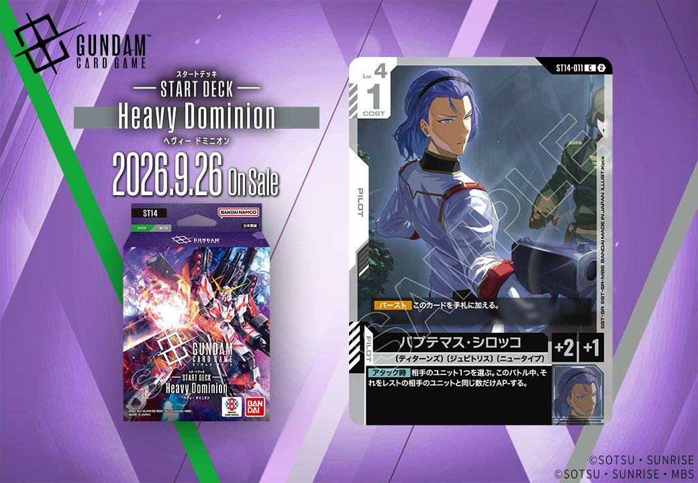
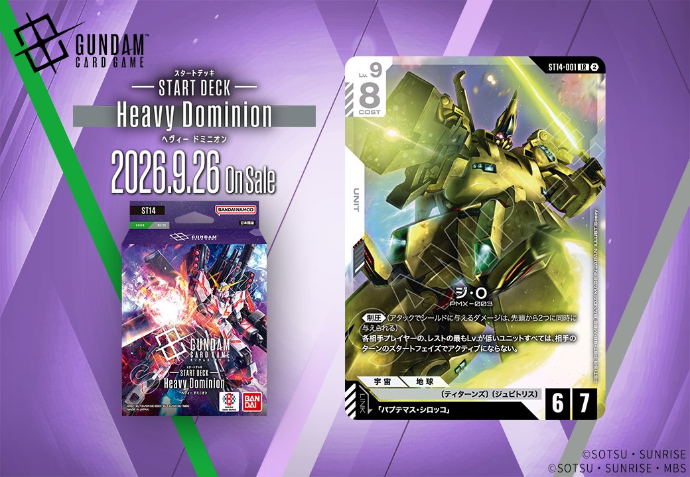

今回はST14「ジェネレーション パルス」から、同日公開のUNITとPILOTがリンクで結ばれる組合せの2枚を紹介します。UNIT「ジ・O」(ST14-001)はリンク条件に「パプテマス・シロッコ」を指定しており、同時公開のPILOT「パプテマス・シロッコ」(ST14-011)とリンクが成立する構成です。いずれも白のカードで、発売は2026年9月26日となっています。

パプテマス・シロッコ (ST14-011)
| 色 | 白 | タイプ | PILOT |
| Lv | 4 | コスト | 1 |
| 補正 AP | 2 | 補正 HP | 1 |
| 特徴 | 〔ティターンズ〕、〔ジュビトリス〕、〔ニュータイプ〕 | ||
効果: 【バースト】このカードを手札に加える。【アタック時】相手のユニット1つを選ぶ。このバトル中、それをレストの相手のユニットと同じ数だけAP-する。
COST1でAP2/HP1という軽量パイロットながら、【アタック時】に相手のレスト状態のユニット数だけ対象のAPを下げられるため、相手が展開してレストを重ねた盤面ほど大幅なAP低下を狙える一枚です。同日公開の「ジ・O」(ST14-001)とはリンク条件が成立し、同一ユニット上で運用すれば《制圧》持ちのジ・Oにこの【アタック時】の対象AP低下を組み合わせられます。ティターンズ・ジュビトリスを共有する構築での併用が見込め、発売は2026-09-26です。

ジ・O (ST14-001)
| 色 | 白 | タイプ | UNIT |
| Lv | 9 | コスト | 8 |
| AP | 6 | HP | 7 |
| 特徴 | 〔ティターンズ〕、〔ジュビトリス〕 | ||
| リンク条件 | 「パプテマス・シロッコ」 | ||
効果: 《制圧》（アタックでシールドに与えるダメージは、先頭から2つに同時に与えられる） 各相手プレイヤーの、レストの最もLv.が低いユニットすべては、相手のターンのスタートフェイズでアクティブにならない。
ジ・O(ST14-001)はLv.9/コスト8でAP6/HP7の白ユニット、《制圧》によりシールドエリアへのアタックで先頭2枚に同時ダメージを与えられる点が攻めの軸となる。加えて各相手プレイヤーのレスト最低Lvユニットがスタートフェイズでアクティブにならないため、相手の低Lvユニットを継続的に拘束できるのが独自の強みだ。 リンク相手のパプテマス・シロッコ(ST14-011)は【アタック時】に相手ユニット1つをレスト状態の相手ユニット数だけAP-する効果を持ち、同一ユニット上で〔ティターンズ〕〔ジュビトリス〕を共有しつつリンク中の高AP機体として運用できる。2026-09-26発売。
関連カード
-
 リディ・マーセナス(GD04-098)白系デッキ内採用率2.4% (111デッキ)
リディ・マーセナス(GD04-098)白系デッキ内採用率2.4% (111デッキ) -
 クワトロ・バジーナ(GD02-098)白系デッキ内採用率0.1% (6デッキ)
クワトロ・バジーナ(GD02-098)白系デッキ内採用率0.1% (6デッキ) -
 カミーユ・ビダン(GD02-097)白系デッキ内採用率0.1% (4デッキ)
カミーユ・ビダン(GD02-097)白系デッキ内採用率0.1% (4デッキ) -
パプテマス・シロッコ(ST14-011)NEW白系 — 同色・共通特徴: ティターンズ、ジュビトリス（新カード）
-
 溢れる慈愛(GD01-118)白系デッキ内採用率38.5% (1811デッキ)
溢れる慈愛(GD01-118)白系デッキ内採用率38.5% (1811デッキ) -
 ガンダム・ルブリス(GD01-086)白系デッキ内採用率33% (1552デッキ)
ガンダム・ルブリス(GD01-086)白系デッキ内採用率33% (1552デッキ) -
 エールストライクガンダム(ST04-001)白系デッキ内採用率31.2% (1467デッキ)
エールストライクガンダム(ST04-001)白系デッキ内採用率31.2% (1467デッキ) -
 キラ・ヤマト(ST04-010)白系デッキ内採用率30.8% (1451デッキ)
キラ・ヤマト(ST04-010)白系デッキ内採用率30.8% (1451デッキ) -
 パプテマス・シロッコ(GD03-084)青系デッキ内採用率3.3% (154デッキ)
パプテマス・シロッコ(GD03-084)青系デッキ内採用率3.3% (154デッキ) -
パプテマス・シロッコ(GD03-084_p1)青系デッキ内採用率0% (0デッキ)